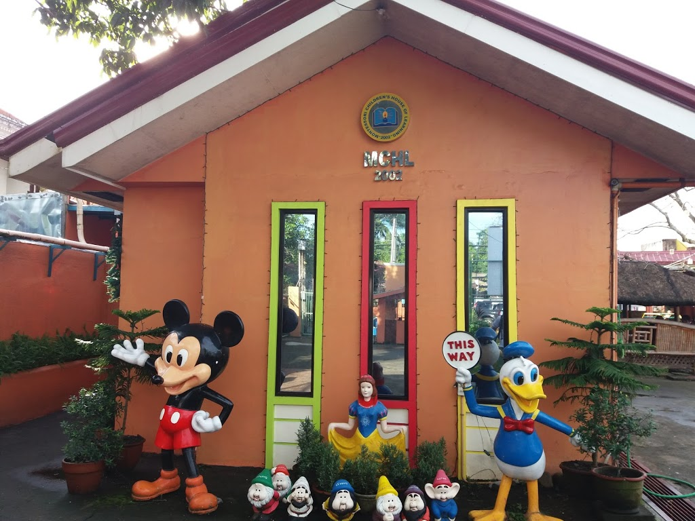
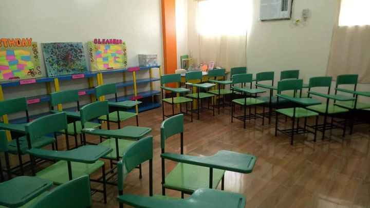

Montessori Children's House Of Learning Was Founded On 2002
It Was Created By Joanes G.Santiago , It Have 6 Campuses In Bicol Region
Which Is Naga , Daet , Goa , Pili , Nabua , Iriga , Orange And White Is The
Color Of Their Campus


Source: Google MCHL-Naga And Daet